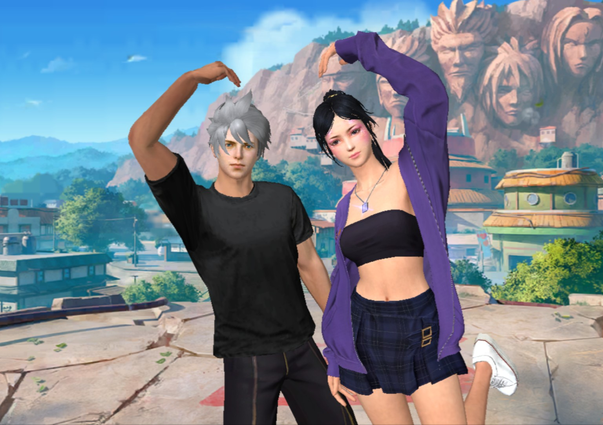

Jayé / Yarc
A place for the things I like, the things I create, the people and memories that matter, and pieces of myself I want to keep somewhere.
Intro.
This is just a small space that belongs to me. Nothing here is meant to be perfect or overly serious.
It’s a place to keep things I like, things I make, memories I want to remember, and parts of my life that I don't want to disappear into the internet.
The Things I Do.
I’ve tried a lot of different things, some I stayed with, some I didn’t.
I like learning something new, messing around with it, and seeing where it goes.
I’m not trying to have everything figured out or be the best at everything. I just like having things to explore.
Favourites.
Probably my favourite colour. I’ve liked it for as long as I can remember.
My usual drinks. Nothing fancy. I just like them.
Kendrick is one of my favourites, but that's definitely not the whole picture. My taste changes a lot. I listen to different genres, different artists, different sounds, basically whatever feels right at the time. There isn't really one box my music belongs in.
Free Fire, Roblox, Chess.com. I don't really stick to one type of game. I just play whatever I feel like playing.
I like pretty much every animal. I’ve got dogs and bunnies, so those are probably the ones I’m around the most.
Currently.
Currently a student.
Somewhere between figuring out what I want, learning what I can, and slowly understanding what actually matters to me.
For now, I’m just taking it as it comes, learning, making mistakes, finding things I enjoy, and keeping a few things close along the way.
I don't have everything figured out yet. And honestly, I think that's okay.
The People I Got Lucky With.
I’ve met some genuinely great people, both in-game and in real life.
Different places, different stories, different kinds of friendships, but somehow they all became part of my life.
I don’t take that for granted.
I feel pretty blessed to have the people I have.
Little Things.
Not everything about me needs a whole explanation.
I like small things that make everyday life better, good conversations, random laughs, late-night gaming, discovering something new, listening to music, spending time with people I care about, and having things that feel like mine.
I also appreciate simple things more than complicated ones. Sometimes the little things are enough.
Beliefs.
I like thinking deeply about things, questioning what I'm told, and forming my own opinions.
I'm interested in how people think, why things work the way they do, and ideas that actually make me stop and think.
I don't believe being smart means knowing everything.
For me, it's being curious enough to keep asking better questions.
Things I Like.
I like things that genuinely interest me, not just things that look impressive.
Games, music, animals, technology, interesting conversations, discovering random things online, and anything that gives me something new to explore.
My interests change over time, and that's part of it.
I like having more than one side to myself.
Memories.
Some moments don't need to be posted everywhere to matter.
There are people I've met, conversations I've had, games I've played, stupid moments I've laughed at, and memories that stayed with me longer than I expected.
This section is for those things.
The moments I don't want to forget.
The kindest girl I’ve ever met through a game, and genuinely one of the purest souls I’ve come across.
What makes her different is the way her kindness feels natural. She doesn't need a reason to be good to someone, and she doesn't seem to do it for attention either. That kind of person is rare.
I admire the softness in her character, the way she can make someone feel comfortable just by being herself. There’s something really genuine about that.
I don't have one perfect moment that explains why she matters. Sometimes it's not one big memory. It’s the collection of small things that slowly make someone important.
Meeting her through a game was random.
Keeping the memory of her isn't.
If I had to describe her in three words:
Kind. Genuine. Pure.
And if she ever reads this, I’d want her to know one simple thing:
I'm genuinely glad I met you.
I hope you never lose the part of yourself that makes you this kind. The world has enough people trying to be impressive. Staying genuinely good is something else.
For Demi / Shree.
